<!DOCTYPE html>
<html>
<head>
  <meta charset="UTF-8">
  <title>daining bar</title>
  <link type="text/css" href="style.css" rel="stylesheet">
  <script type="text/javascript" src="jquery-2.0.0.min.js"></script>
  <script type="text/javascript" src="PictureSlides-jquery-2.0.js"></script>
<script type="text/javascript">
	jQuery.PictureSlides.set({
		// Switches to decide what features to use
		useFadingIn : true,
		useFadingOut : true,
		useFadeWhenNotSlideshow : true,
		useFadeForSlideshow : true,
		useDimBackgroundForSlideshow : true,
		loopSlideshow : false,
		usePreloading : true,
		useAltAsTooltip : true,
		useTextAsTooltip : false,

		// Fading settings
		fadeTime : 500, // Milliseconds	
		timeForSlideInSlideshow : 2000, // Milliseconds

		// At page load
		startIndex : 1,	
		startSlideShowFromBeginning : true,
		startSlideshowAtLoad : false,
		dimBackgroundAtLoad : false,

		// Large images to use and thumbnail settings
		//　ここに大きくして欲しい画像を入れ込む
		images : [
			{
				image : "pictures/36.png", 
				alt : "Picture 1",
				text : "This is picture 1"
			},
			{                                  

				image : "pictures/42.png", 
				alt : "Picture 2",
				text : "This is picture 2",
			},
			{                                  

				image : "pictures/62.png", 
				alt : "Picture 3",
				text : "This is picture 3",
			},
			{   image : "pictures/35.png",
				alt : "picture 4",
				text : "This is picture 4"
			} ,
			{   image : "pictures/6.png",
				alt : "picture 4",
				text : "This is picture 4"
			} ,
			{   image : "pictures/147.png",
				alt : "picture 4",
				text : "This is picture 4"
			} ,
			{
				image : "pictures/214.png", 
				alt : "Picture 3",
				text : "This is picture 3",
			},
			{   image : "pictures/218.png",
				alt : "picture 4",
				text : "This is picture 4"
			} ,
			{   image : "pictures/229.png",
				alt : "picture 4",
				text : "This is picture 4"
			} ,
			{   image : "pictures/254.png",
				alt : "picture 4",
				text : "This is picture 4"
			} 
			
			
			
			
			// NOTE! No comma after the last object
			　//最後の{}は,で区切らない
		],
		thumbnailActivationEvent : "click",

		// Classes of HTML elements to use
		mainImageClass : "picture-slides-image", // Mandatory
		imageLinkClass : "picture-slides-image-link",
		fadeContainerClass : "picture-slides-fade-container",
		imageTextContainerClass : "picture-slides-image-text",
		previousLinkClass : "picture-slides-previous-image",
		nextLinkClass : "picture-slides-next-image",
		imageCounterClass : "picture-slides-image-counter",
		startSlideShowClass : "picture-slides-start-slideshow",
		stopSlideShowClass : "picture-slides-stop-slideshow",
		thumbnailContainerClass: "picture-slides-thumbnails",
		dimBackgroundOverlayClass : "picture-slides-dim-overlay"
	});
</script>
  <![endif]-->

</head>
<body>

<!-- ヘッダ -->
<header>
  <h1>dainingbar</h1>
  <p>ダイニングバー比較<br>
    八王子、立川編</p>
</header>

<!--ナビゲーション -->
<nav>
  <div class="menu">
  <ul>
    <li>
      <a href="index.html">Home</a>
    </li>
    <li>
      <a href="#">店舗一覧</a>
    	<ul>
	          <li><a href="rink/tenpo/funky.html">
	            FUNKY原田
	          </a></li>
	          <li><a href="rink/tenpo/buga.html">
	            ブーガルーカフェ
	          </a></li>
	          <li><a href="rink/tenpo/gaburi.html">
	            モモ焼きBARガブリエール</a>
	          </li>
	          <li><a href="rink/tenpo/motown.html">
	           MOTOWN</a>
	          </li>
	          <li><a href="rink/tenpo/roki.html">
	            ロキダイニング</a>
	          </li>
	          <li><a href="rink/tenpo/seed.html">
	            SEED</a>
	          </li>
	          <li><a href="rink/tenpo/hub.html">
			  	  HUB</a>
			   </li>
			   <li><a href="rink/tenpo/muchacafe.html">
			  	  ムチャカフェ</a>
			  	</li>
	        </ul>

    </li>
	
    <li>
      <a href="#">ランキング</a>
	      <ul>
			<li><a href="rink/ranking/kakaku.html">
				コストパフォーマンス
				</a>
			</li>
		  	<li><a href="rink/ranking/umai.html">
		  	  	美味しさ</a>
		  	</li>
			<li><a href="rink/ranking/hunniki.html">
		  	  	雰囲気</a>
		  	</li>
		  	 <li><a href="rink/ranking/ux.html">
		  	  	UX</a>
		  	</li>
	  	        </ul>
	      </li>
    <li>
      <a href="#">条件で選ぶ</a>
        <ul>
	  	  	  	  	          <li><a href="rink/joken/huniki.html">
	  	  	  	雰囲気で選ぶ
	  	  	  	          </a></li>

	  	  	  	  	         <li><a href="rink/joken/ryori.html">
							 	  	  	  	  	            料理で選ぶ</a>
	  	  	  	  	          </li>

	  	  	  	  	          <li><a href="rink/joken/ninzu.html">
	  	  	  	  	           人数でえらぶ</a>
	  	  	  	  	          </li>
							  
	  	        </ul>
    </li>

  </div>
</nav>


<!-- メインコンテンツ -->
<article id="content" class="articlecontent">
  <h2>調査テーマ『ダイニングバー』</h2>
  <p>
    はじめまして。<br>
    このページは、八王子駅、立川駅周辺のダイニングバーを比較し紹介していくサイトです。<br>
	　<h2>ダイニングバーとは</h2>
　<p>普通のバーと違いドリンクだけでなく本格的な料理も楽しめる。人気のダイニングバーほど創作料理とオリジナルカクテルに力を入れていて人が集まる。</p>

<br>
<br>
<h2>目的</h2>
<font size="3">	・好みの空間でまったりとしたい！<br>
	・雰囲気を味わいながらお洒落に酔いしれたい<br>
	・他の人が知らないようなお店で優越感に浸りたい<br>
</font>

<h2>仮説</h2>
<br>
<font size="3">
〜居酒屋とは違い値段もそこまで多く注文することができない。。〜<br>
しかし<br>
コンセプト：隠れ家。ゴージャスなどのお店ごとにコンセプトが存在する<br>
オリジナルメニュー「創作料理・オリジナルカクテル」：そのお店でしか食べられない（飲めない）メニューがある。<br>
</font>
  </p>
<br>
<br>
<h2>調査方法・基準</h2>
<font size="3">
☆基本編<br>
<p>・オリジナルメニュー数<br>
・ドリンク・フード待ち時間<nr>
・価格<br>
・接客対応<br>
・営業時間<br>
&nbsp;&nbsp;&nbsp;&nbsp;&nbsp;&nbsp;&nbsp;&nbsp;&nbsp;&nbsp;&nbsp;&nbsp;&nbsp;&nbsp;[とても悪い　←　1・２・３（普通）・４・５　→　とても良い]<br>
</p>
☆雰囲気編<br>
<p>照明<br>
・音楽<br>
・外観<br>
・内装<br>
・立地<br>
&nbsp;&nbsp;&nbsp;&nbsp;&nbsp;&nbsp;&nbsp;&nbsp;&nbsp;&nbsp;&nbsp;&nbsp;&nbsp;&nbsp;[とても悪い　←　1・２・３（普通）・４・５　→　とても良い]<br>
<br>
</p>
☆UX編
<p>
・調査時（HP閲覧時）<br>
・店に向かう途中<br>
・到着時（お店に到着）<br>
・食事中<br>
・帰り道<br>
&nbsp;&nbsp;&nbsp;&nbsp;&nbsp;&nbsp;&nbsp;&nbsp;&nbsp;&nbsp;&nbsp;&nbsp;&nbsp;&nbsp;[とても悪い　←　1・２・３（普通）・４・５　→　とても良い]<br>
</p>
</font>

<br>
<br>
<!--   jquery plugin   -->
   		<div class="picture-slides-container">
	<div class="picture-slides-fade-container">
		<a class="picture-slides-image-link">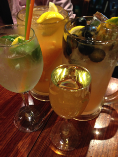</a>
	</div>

	<div class="picture-slides-image-text">This is picture 1</div>

	<div class="navigation-controls">
		<span class="picture-slides-previous-image">Previous</span>
		<span class="picture-slides-image-counter"></span>
		<span class="picture-slides-next-image">Next</span>

		<span class="picture-slides-start-slideshow">Start slideshow</span>
		<span class="picture-slides-stop-slideshow">Stop slideshow</span>
	</div>

	<div class="picture-slides-thumbnails">
		<span><a href="pictures/9.png">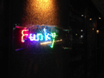</a></span>
		<span><a href="pictures/19.png">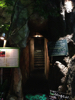</a></span>
		<span><a href="pictures/31.png">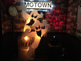</a></span>
		<span><a href="pictures/28.png">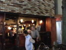</a></span>
		<span><a href="pictures/31.png">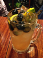</a></span>
		<span><a href="pictures/28.png">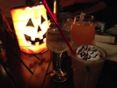</a></span>
		<span><a href="pictures/31.png">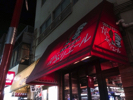</a></span>
		<span><a href="pictures/28.png">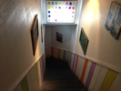</a></span>
		<span><a href="pictures/31.png">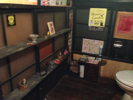</a></span>
		<span><a href="pictures/28.png">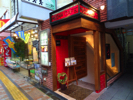</a></span>

	</div>
</div>
<!--   ここまで -->


  <h2>グループ紹介</h2>

  <dl>
    <dt>
      メンバー
    </dt>
    <dd>
      府金　恭平（ふがね　きょうへい）　松本　尚悟（まつもと　しょうご）　佐藤森矢（さとう　しんや）
    </dd>

    <dt>
      所属
    </dt>
    <dd>
      東京工科大学 メディア学部メディア学科3年　上林研究室
    </dd>

    <dt>
      出身
    </dt>
    <dd>
      羽村市　あきる野市　八王子市
    </dd>

    
    <dd>
      <li></li>
    </dd>
  </dl>
</article>

<aside>
  <section>
    <h3>
      Link
    </h3>
    <ul>
      <li><a href="http://www.teu.ac.jp/" target="_blank">東京工科大学</a></li>
    </ul>
  </section>
</aside>

<!-- フッタ -->
<footer>
  <p>Copyright&copy; 2014 Kyohei Fugane</p>
</footer>

</body>
</html>